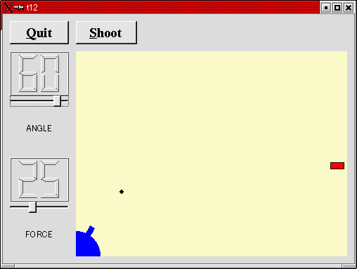

トップページ＞＞＞
「ぷろぐらみんぐ」目次＞＞＞
「Qt Tutorial Index Page」
Chapter 12: Hanging in the Air the Way Bricks Don't
初版作成：2002/01/10
- ソースコード
- 解説
- コンパイル・動作確認
- いじくりまわす
- 付録：lcdrange.h
- 付録：lcdrange.cpp
- 付録：cannon.h
- 付録：cannon.cpp
- 付録：main.cpp

今回の作例では LCDRange クラスにテキストラベルを付け足してみます。また、標的となる赤いブロックを描き、当たり判定を
下してみます。
今回は cannon.h, cannon.cpp, main.cpp に加え、lcdrange.h, lcdrange.cpp と全ソースが変更されます。最後に付録として
掲載しておきます。
付録：lcdrange.h
付録：lcdrange.cpp
付録：cannon.h
付録：cannon.cpp
付録：main.cpp
目次に戻る
それでは各ファイルごとに、ポイント部分の解説を行っていきます。
lcdrange.h
LCDRange にテキストラベルを加えています。
class QLabel;
QLabelを用いるため、とりあえず前方宣言しておきます。
class LCDRange : public QVBox
{
Q_OBJECT
public:
LCDRange( QWidget *parent=0, const char *name=0 );
LCDRange( const char *s, QWidget *parent=0,
const char *name=0 );
テキストラベルを指定できるコンストラクタを追加しています。
const char *text() const;
ラベルに表示するテキストを取得します。
void setText( const char * );
ラベルに表示するテキストを設定します。
private:
void init();
今回コンストラクタが二つに増えました。ので、その共通部分をプライベートメンバ関数init()として分離します。
QLabel *label;
ここでQLabelを新しくプライベートメンバとして追加します。QLabelは単純なテキスト（pixmapも混在可）表示用のQtの標準
的なウィジェットです。
lcdrange.cpp
#include <qlabel.h>
QLabelを定義しているヘッダファイルをインクルードします。
LCDRange::LCDRange( QWidget *parent, const char *name )
: QVBox( parent, name )
{
init();
}
init() はQLabelを使おうが使わまいが関係ないコンストラクタ処理を分離したものです。
このコンストラクタはQLabel文字列を指定しないので、QLabelに関する処理は行わず、単にinit()を呼ぶだけです。
LCDRange::LCDRange( const char *s, QWidget *parent,
const char *name )
: QVBox( parent, name )
{
init();
setText( s );
}
このコンストラクタはQLabelに表示する文字列を設定できるタイプです。ので、init() の後にsetText(s)でQLabelに表示する
文字列を設定するようになっています。
void LCDRange::init()
{
QLCDNumber *lcd = new QLCDNumber( 2, this, "lcd" );
slider = new QSlider( Horizontal, this, "slider" );
slider->setRange( 0, 99 );
slider->setValue( 0 );
label = new QLabel( " ", this, "label" );
label->setAlignment( AlignCenter );
connect( slider, SIGNAL(valueChanged(int)),
lcd, SLOT(display(int)) );
connect( slider, SIGNAL(valueChanged(int)),
SIGNAL(valueChanged(int)) );
setFocusProxy( slider );
}
QLabelオブジェクトを生成している以外は前回までのChapterと同一です。んで、QLabelに表示する文字列はウィジェット中央
になるよう、setAlignment()で指定しています。
const char *LCDRange::text() const
{
return label->text();
}
QLabelに表示する文字列を返します。今回の作例ではこの間数は使われていません。しかし、あるプロパティにたいしてセッタ
とゲッタを対にしておくことにより、生来の拡張に備え、そしてソースコードの統一感もとれます。
void LCDRange::setText( const char *s )
{
label->setText( s );
}
QLabelに表示する文字列を設定します。
cannon.h
二つのシグナルを追加します。hit()とmissed()です。さらに今回から赤いブロックとして標的も生成します。
void newTarget();
newTarget() スロットはターゲットを新しい位置で描画します。
signals:
void hit();
void missed();
hit() シグナルは弾丸が標的にヒットすると送出されます。missed() シグナルは弾丸の位置がウィジェットの境界より外に
出てしまったとき送出されます。
void paintTarget( QPainter * );
標的を描画するためのプライベートメンバ関数です。
QRect targetRect() const;
標的を描画するのに必要な矩形領域を返します。
QPoint target;
標的の中心位置を保持します。
cannon.cpp
#include <qdatetime.h>
QDate, QTime, QDateTimeクラスのヘッダーファイルをインクルードしています。
#include <stdlib.h>
rand() 関数を用いるために stdlib.h をインクルードしています。
newTarget();
コンストラクタに新たに newTarge(); が追加されています。この関数は標的をランダムな位置に描画します。
実は newTarget() メソッドは標的の描画までしています。ところが今回の作例ではnewTarget()はコンストラクタで呼ばれて
います。そのとき、CannonFieldウィジェットは当然まだ表示されていません。表示されていないウィジェットに描画処理を
しても安全なのでしょうか。
Qtは、表示されていないウィジェットに対するrepaint()処理による悪影響は無いように出来ているので、その点に関しては
心配要らないようです。
void CannonField::newTarget()
{
static bool first_time = TRUE;
if ( first_time ) {
first_time = FALSE;
QTime midnight( 0, 0, 0 );
srand( midnight.secsTo(QTime::currentTime()) );
}
QRegion r( targetRect() );
target = QPoint( 200 + rand() % 190,
10 + rand() % 255 );
repaint( r.unite( targetRect() ) );
}
標的の中心位置をランダムに生成します。
通常乱数を発生させるにはrand()関数を用います。rand()はプログラムが実行されるたびに同じ数列を通常は生成します。その
ため、rand()をそのまま使ってしまうとアプリケーション実行の度に同じ位置に標的が表示されてしまいます。これを避けるため、
この関数が実行されるたびに乱数基を設定するようにしました。
乱数基それ自体も同じ乱数数列の生成を避けるため、ランダムである必要があります。そこで今回は現在時刻の秒数をもとに
乱数基を設定するようにしています。
まず、staticな変数としてfirst_time をbool型で宣言しておきます。んで、最初はTRUEで初期化しておきます。
続いてfirst_timeが真の時は、初めてこの関数が呼ばれたときですのでsrandで乱数を初期化します。first_timeが偽の時は
二回目以降、つまり乱数の初期化は済んでいるのでsrand周りの処理はスキップします。
初期化部分では最初に深夜の０時０分０秒を表すQTime型のオブジェクトmidnightを生成します。続いて、現在時刻がその深夜
０時０分０秒から何秒経過ているかをsrand()に渡して乱数の初期化を行っています。
んで、とりあえず直前の標的位置をあとでマスキングするため取得しときます。
続いて乱数から新しい標的の中心位置を取得します。
今回は標的の中心位置を X座標は 200 から 200+190(=390) まで、Y座標を 10 から 10+255(=265) までに制限しました。
座標の取り方は X座標で 0 をウィジェットの左端、Y座標で 0 をウィジェットの下端と考えています。んでXは右へ行くと正、
Yは上に向かうと正としています。
一応実験によって、この範囲は弾丸が必ず届く範囲であることも保証されています。
rand()は必ずゼロ以上の整数値を返すことにも注意して置いて下さい。
void CannonField::moveShot()
{
QRegion r( shotRect() );
timerCount++;
QRect shotR = shotRect();
この部分のタイマー周りのイベントは前回のChapterから変わっていません。
if ( shotR.intersects( targetRect() ) ) {
autoShootTimer->stop();
emit hit();
このif文では弾丸の表示矩形が標的の表示矩形と重なっていないかチェックしています（ようするに当たり判定）。もし重なって
いれば、弾丸は標的に当たっているので、タイマーをストップさせ、hit()シグナルを外界に向かって送出します。
標的に関してはその場で作成することもできます。しかしCannonFieldはコンポーネントです。ので、標的作成に関する決定は
コンポーネントのユーザーにお任せとします（若干意味不明）。
} else if ( shotR.x() > width() || shotR.y() > height() ) {
autoShootTimer->stop();
emit missed();
この if では前回までのChapterと同様、弾丸がウィジェット表示範囲外に出てしまったか否かを判別しています。外に出てしま
ったらタイマーをストップさせ、missed()シグナルを外界に送出します。
} else {
このelse以下は前回までと同様です。
CannonField::paintEvent() is as before, except that this has been added:
if ( updateR.intersects( targetRect() ) )
paintTarget( &p );
この二行は必要とあれば標的も再描画できるようにするための措置です。こうしておけば標的が移動するようになったときも、
変更箇所にたいして一定のフレームワークを提供できます。
void CannonField::paintTarget( QPainter *p )
{
p->setBrush( red );
p->setPen( black );
p->drawRect( targetRect() );
}
標的を黒いエッジライン(setPen)、赤く塗りつぶし(setBrush)て矩形描画しています。
QRect CannonField::targetRect() const
{
QRect r( 0, 0, 20, 10 );
r.moveCenter( QPoint(target.x(),height() - 1 - target.y()) );
return r;
}
標的の描画矩形を返します。newTarget()では、ウィジェットの下端をY軸のゼロとして、上に向かって正としていました。とこ
ろがウィジェットの座標系は上端をY軸のゼロとして、下に向かって正をとっています。そのため、newTarget()によるY座標を
ウィジェット座標系のY座標に修正するための処理が moveCenter で行われています。
何でわざわざY軸位置をウィジェット座標系と異ならせたかは、標的とウィジェットの下端との距離を考えたためです。という
のも今回までではユーザーかプログラムソースコード中でウィジェットの大きさをいつでも変更できるようになっているからです。
main.cpp
コンストラクタ中で LCDRange ウィジェットを生成するとき、QLabelで表示する文字列を指定するように変更されています。
LCDRange *angle = new LCDRange( "ANGLE", this, "angle" );
...
LCDRange *force = new LCDRange( "FORCE", this, "force" );
...
目次に戻る
んじゃあ、コンパイルしてみましょう。
[fenjin@seisyuu t12]$ ls
cannon.cpp cannon.h lcdrange.cpp lcdrange.h main.cpp
[fenjin@seisyuu t12]$ progen -n t12 -o t12.pro
[fenjin@seisyuu t12]$ tmake -o Makefile t12.pro
[fenjin@seisyuu t12]$ make
g++ -c -pipe -Wall -W -O2 -DNO_DEBUG -I/usr/lib/qt/include -o cannon.o cannon.cpp
g++ -c -pipe -Wall -W -O2 -DNO_DEBUG -I/usr/lib/qt/include -o lcdrange.o lcdrange.cpp
g++ -c -pipe -Wall -W -O2 -DNO_DEBUG -I/usr/lib/qt/include -o main.o main.cpp
/usr/lib/qt/bin/moc cannon.h -o moc_cannon.cpp
g++ -c -pipe -Wall -W -O2 -DNO_DEBUG -I/usr/lib/qt/include -o moc_cannon.o moc_cannon.cpp
/usr/lib/qt/bin/moc lcdrange.h -o moc_lcdrange.cpp
g++ -c -pipe -Wall -W -O2 -DNO_DEBUG -I/usr/lib/qt/include -o moc_lcdrange.o moc_lcdrange.cpp
g++ -o t12 cannon.o lcdrange.o main.o moc_cannon.o moc_lcdrange.o
-L/usr/lib/qt/lib -L/usr/X11R6/lib -lqt -lXext -lX11 -lm
[fenjin@seisyuu t12]$ ls
Makefile cannon.o lcdrange.o moc_cannon.cpp moc_lcdrange.o
cannon.cpp lcdrange.cpp main.cpp moc_cannon.o t12*
cannon.h lcdrange.h main.o moc_lcdrange.cpp t12.pro
んで、実行ファイル t12 を実行すると冒頭に示したようなウインドウが表示されるわけです。
Shoot ボタンをクリックすると黒い矩形の弾丸が発射されます。赤いブロックはランダムな実行するたびにランダムな位置に
出現します。
弾丸はブロックとぶつかると消滅します。かといってブロックまでは消えません。
今回の実装ではブロックはずっと表示されたままです。
左上のQuitボタンをクリックするとアプリケーションは終了します。
目次に戻る
めんどいので、パス（爆）。
次のChapterにてあいませう。
目次に戻る
#ifndef LCDRANGE_H
#define LCDRANGE_H
#include <qvbox.h>
class QSlider;
class QLabel;
class LCDRange : public QVBox
{
Q_OBJECT
public:
LCDRange( QWidget *parent=0, const char *name=0 );
LCDRange( const char *s, QWidget *parent=0,
const char *name=0 );
int value() const;
const char *text() const;
public slots:
void setValue( int );
void setRange( int minVal, int maxVal );
void setText( const char * );
signals:
void valueChanged( int );
private:
void init();
QSlider *slider;
QLabel *label;
};
#endif // LCDRANGE_H
目次に戻る
#include "lcdrange.h"
#include <qslider.h>
#include <qlcdnumber.h>
#include <qlabel.h>
LCDRange::LCDRange( QWidget *parent, const char *name )
: QVBox( parent, name )
{
init();
}
LCDRange::LCDRange( const char *s, QWidget *parent,
const char *name )
: QVBox( parent, name )
{
init();
setText( s );
}
void LCDRange::init()
{
QLCDNumber *lcd = new QLCDNumber( 2, this, "lcd" );
slider = new QSlider( Horizontal, this, "slider" );
slider->setRange( 0, 99 );
slider->setValue( 0 );
label = new QLabel( " ", this, "label" );
label->setAlignment( AlignCenter );
connect( slider, SIGNAL(valueChanged(int)),
lcd, SLOT(display(int)) );
connect( slider, SIGNAL(valueChanged(int)),
SIGNAL(valueChanged(int)) );
setFocusProxy( slider );
}
int LCDRange::value() const
{
return slider->value();
}
const char *LCDRange::text() const
{
return label->text();
}
void LCDRange::setValue( int value )
{
slider->setValue( value );
}
void LCDRange::setRange( int minVal, int maxVal )
{
if ( minVal < 0 || maxVal > 99 || minVal > maxVal ) {
qWarning( "LCDRange::setRange(%d,%d)\n"
"\tRange must be 0..99\n"
"\tand minVal must not be greater than maxVal",
minVal, maxVal );
return;
}
slider->setRange( minVal, maxVal );
}
void LCDRange::setText( const char *s )
{
label->setText( s );
}
目次に戻る
#ifndef CANNON_H
#define CANNON_H
class QTimer;
#include <qwidget.h>
class CannonField : public QWidget
{
Q_OBJECT
public:
CannonField( QWidget *parent=0, const char *name=0 );
int angle() const { return ang; }
int force() const { return f; }
QSizePolicy sizePolicy() const;
public slots:
void setAngle( int degrees );
void setForce( int newton );
void shoot();
void newTarget();
private slots:
void moveShot();
signals:
void hit();
void missed();
void angleChanged( int );
void forceChanged( int );
protected:
void paintEvent( QPaintEvent * );
private:
void paintShot( QPainter * );
void paintTarget( QPainter * );
void paintCannon( QPainter * );
QRect cannonRect() const;
QRect shotRect() const;
QRect targetRect() const;
int ang;
int f;
int timerCount;
QTimer * autoShootTimer;
float shoot_ang;
float shoot_f;
QPoint target;
};
#endif // CANNON_H
目次に戻る
#include "cannon.h"
#include <qtimer.h>
#include <qpainter.h>
#include <qpixmap.h>
#include <qdatetime.h>
#include <math.h>
#include <stdlib.h>
CannonField::CannonField( QWidget *parent, const char *name )
: QWidget( parent, name )
{
ang = 45;
f = 0;
timerCount = 0;
autoShootTimer = new QTimer( this, "movement handler" );
connect( autoShootTimer, SIGNAL(timeout()),
this, SLOT(moveShot()) );
shoot_ang = 0;
shoot_f = 0;
target = QPoint( 0, 0 );
setPalette( QPalette( QColor( 250, 250, 200) ) );
newTarget();
}
void CannonField::setAngle( int degrees )
{
if ( degrees < 5 )
degrees = 5;
if ( degrees > 70 )
degrees = 70;
if ( ang == degrees )
return;
ang = degrees;
repaint( cannonRect(), FALSE );
emit angleChanged( ang );
}
void CannonField::setForce( int newton )
{
if ( newton < 0 )
newton = 0;
if ( f == newton )
return;
f = newton;
emit forceChanged( f );
}
void CannonField::shoot()
{
if ( autoShootTimer->isActive() )
return;
timerCount = 0;
shoot_ang = ang;
shoot_f = f;
autoShootTimer->start( 50 );
}
void CannonField::newTarget()
{
static bool first_time = TRUE;
if ( first_time ) {
first_time = FALSE;
QTime midnight( 0, 0, 0 );
srand( midnight.secsTo(QTime::currentTime()) );
}
QRegion r( targetRect() );
target = QPoint( 200 + rand() % 190,
10 + rand() % 255 );
repaint( r.unite( targetRect() ) );
}
void CannonField::moveShot()
{
QRegion r( shotRect() );
timerCount++;
QRect shotR = shotRect();
if ( shotR.intersects( targetRect() ) ) {
autoShootTimer->stop();
emit hit();
} else if ( shotR.x() > width() || shotR.y() > height() ) {
autoShootTimer->stop();
emit missed();
} else {
r = r.unite( QRegion( shotR ) );
}
repaint( r );
}
void CannonField::paintEvent( QPaintEvent *e )
{
QRect updateR = e->rect();
QPainter p( this );
if ( updateR.intersects( cannonRect() ) )
paintCannon( &p );
if ( autoShootTimer->isActive() &&
updateR.intersects( shotRect() ) )
paintShot( &p );
if ( updateR.intersects( targetRect() ) )
paintTarget( &p );
}
void CannonField::paintShot( QPainter *p )
{
p->setBrush( black );
p->setPen( NoPen );
p->drawRect( shotRect() );
}
void CannonField::paintTarget( QPainter *p )
{
p->setBrush( red );
p->setPen( black );
p->drawRect( targetRect() );
}
const QRect barrelRect(33, -4, 15, 8);
void CannonField::paintCannon( QPainter *p )
{
QRect cr = cannonRect();
QPixmap pix( cr.size() );
pix.fill( this, cr.topLeft() );
QPainter tmp( &pix );
tmp.setBrush( blue );
tmp.setPen( NoPen );
tmp.translate( 0, pix.height() - 1 );
tmp.drawPie( QRect( -35,-35, 70, 70 ), 0, 90*16 );
tmp.rotate( -ang );
tmp.drawRect( barrelRect );
tmp.end();
p->drawPixmap( cr.topLeft(), pix );
}
QRect CannonField::cannonRect() const
{
QRect r( 0, 0, 50, 50 );
r.moveBottomLeft( rect().bottomLeft() );
return r;
}
QRect CannonField::shotRect() const
{
const double gravity = 4;
double time = timerCount / 4.0;
double velocity = shoot_f;
double radians = shoot_ang*3.14159265/180;
double velx = velocity*cos( radians );
double vely = velocity*sin( radians );
double x0 = ( barrelRect.right() + 5 )*cos(radians);
double y0 = ( barrelRect.right() + 5 )*sin(radians);
double x = x0 + velx*time;
double y = y0 + vely*time - 0.5*gravity*time*time;
QRect r = QRect( 0, 0, 6, 6 );
r.moveCenter( QPoint( qRound(x), height() - 1 - qRound(y) ) );
return r;
}
QRect CannonField::targetRect() const
{
QRect r( 0, 0, 20, 10 );
r.moveCenter( QPoint(target.x(),height() - 1 - target.y()) );
return r;
}
QSizePolicy CannonField::sizePolicy() const
{
return QSizePolicy( QSizePolicy::Expanding, QSizePolicy::Expanding );
}
目次に戻る
#include <qapplication.h>
#include <qpushbutton.h>
#include <qlcdnumber.h>
#include <qfont.h>
#include <qlayout.h>
#include "lcdrange.h"
#include "cannon.h"
class MyWidget: public QWidget
{
public:
MyWidget( QWidget *parent=0, const char *name=0 );
};
MyWidget::MyWidget( QWidget *parent, const char *name )
: QWidget( parent, name )
{
QPushButton *quit = new QPushButton( "&Quit", this, "quit" );
quit->setFont( QFont( "Times", 18, QFont::Bold ) );
connect( quit, SIGNAL(clicked()), qApp, SLOT(quit()) );
LCDRange *angle = new LCDRange( "ANGLE", this, "angle" );
angle->setRange( 5, 70 );
LCDRange *force = new LCDRange( "FORCE", this, "force" );
force->setRange( 10, 50 );
CannonField *cannonField = new CannonField( this, "cannonField" );
connect( angle, SIGNAL(valueChanged(int)),
cannonField, SLOT(setAngle(int)) );
connect( cannonField, SIGNAL(angleChanged(int)),
angle, SLOT(setValue(int)) );
connect( force, SIGNAL(valueChanged(int)),
cannonField, SLOT(setForce(int)) );
connect( cannonField, SIGNAL(forceChanged(int)),
force, SLOT(setValue(int)) );
QPushButton *shoot = new QPushButton( "&Shoot", this, "shoot" );
shoot->setFont( QFont( "Times", 18, QFont::Bold ) );
connect( shoot, SIGNAL(clicked()), cannonField, SLOT(shoot()) );
QGridLayout *grid = new QGridLayout( this, 2, 2, 10 );
grid->addWidget( quit, 0, 0 );
grid->addWidget( cannonField, 1, 1 );
grid->setColStretch( 1, 10 );
QVBoxLayout *leftBox = new QVBoxLayout;
grid->addLayout( leftBox, 1, 0 );
leftBox->addWidget( angle );
leftBox->addWidget( force );
QHBoxLayout *topBox = new QHBoxLayout;
grid->addLayout( topBox, 0, 1 );
topBox->addWidget( shoot );
topBox->addStretch( 1 );
angle->setValue( 60 );
force->setValue( 25 );
angle->setFocus();
}
int main( int argc, char **argv )
{
QApplication::setColorSpec( QApplication::CustomColor );
QApplication a( argc, argv );
MyWidget w;
w.setGeometry( 100, 100, 500, 355 );
a.setMainWidget( &w );
w.show();
return a.exec();
}
目次に戻る
トップページ＞＞＞
「ぷろぐらみんぐ」目次＞＞＞
「Qt Tutorial Index Page」